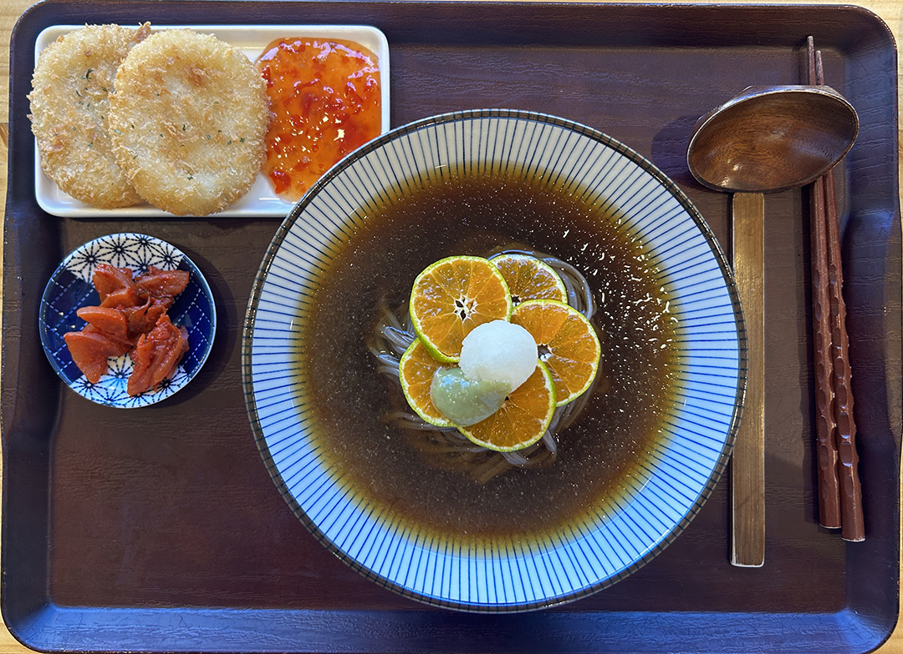

This article recommends user tips for game developers including making most essential game elements be easily accessible at the bottom of the screen, using slider menus to present options, and animating the popup from origins.
What I found most useful was the comfort and UI recommendations. It makes sense that the things that should be most accessible should be closer to the bottom of the screen, and it’s kind of interesting how much psychology goes into small things such as placement. This article was very much focused on monetization and mobile games, so I’m interested to see how these practices apply outside of those contexts.
Learning Journal 4
This is an image I took while studying abroad in Ghana. Our cohort took a trip to Cape Coast, where the slave dungeons still stand to this day. This was taken on top of the fort, adjacent to the Door of No Return, overlooking the Atlantic coast. My residual feelings from this experience remain complicated, but one of my biggest takeaways is that we owe it to ourselves and future generations to ensure that injustices of the past are never repeated.
I believe that every place I have been has contributed to my growth as a person. Certain things that felt unimaginable to me in one location feel very possible in another. I think there is a connection between geography and identity that I try to explore in all of my work.
Latrell Broughton, 2019
This photo collection, in particular, focuses on skyscapes. I want the viewer to see skies from around the world and feel that places can be both similar and dramatically different. I hope the viewer looks at these works and feels that the world is vast and grand, yet also beautiful and traversable.
This image focuses on food in a specific location, bridging the gap between a travel photo and a food photo. The composition is excellent, and my eyes are drawn smoothly to the dish in the center of the image. Since I am unfamiliar with the dish, I find myself examining the individual components, trying to figure out what it is and where it originates. The leading lines within the bowl are particularly compelling.

Gianna Nguyen, 2024
The obvious elements in this image are the food itself and the eating utensils, which suggest that the dish originates from a particular region. I think the most mysterious aspect is the setting. Since this is a tray of food without any other context, I find myself wondering what might be taking place just outside the frame. It’s an interesting image on its own and can be very powerful when paired with other images to tell a cohesive story.
Learning Journal 3
This post is about using images to engage audiences critically. The trick is to use images with an implied story or narrative, without a caption, and encourage viewers to supply their own captions that complete the story. This exercise is great for encouraging deeper interpretation of images, as well as for breaking the ice and starting conversations.
The point that the captions will be informed by the personal experiences of the viewer is interesting. Someone who is from the region of the world that the image is taken could have more cultural context for the image than someone who isn't. For that reason I think it is important for the original ideas behind the image to be reveled, so that people can be more informed of global issues.
The website that I went to is r/generative in reddit. This is a subreddit dedicated to generative art (art made from programming). I find that these images are engaging in a different way, instead of being enamored by the narrative elements of the image, we instead find interest in the interesting shapes, movement, colors, and other elements.
Learning Journal 2
This set of blog posts were about overlays and best practices for how to use them. As a visual artist, I am curious about the best ways to show images to people so that size and quality do not have to be irreperably compromised.
The most common example of overlays that I see on the web are not for images, but instead for forms (especially terms and conditions) and calls to action (signing into a mailing list or visiting another link). The idea that it may be a better practice to open content on a new page rather than use an overlay is one that I have never considered.
Key takeaways from these articles is to make the relevance and context of the overlay obvious for readers, make the points of interaction have clear communication, and keep the size and location relatively small so that the key content is accessible.
Article paywalls that cannot be dismissed are (annoying) examples of overlays.
Learning Journal 1
A question I have been considering is how to present information in a way that doesn't feel overwhelming for others. This is blog post advocates for a user oriented web design approach that will encourage audiences to finish content, especially web forms.
I found the philosophy of keeping the finish line for the user as much in focus as possible to be interesting and useful approach for designing any kind of content in a way that encourages completion.
I decided to open a survey from a restaurant from my email to see if I could identify any of these design principles. This customer satisfaction survey from Dominos is making use of a preogress bar and radial options instead of drop down menus.